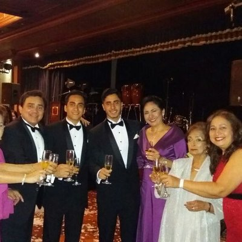
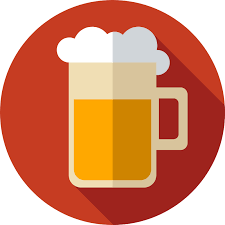

<!--
  Generated template for the ProfilePage page.

  See http://ionicframework.com/docs/components/#navigation for more info on
  Ionic pages and navigation.
-->


  <ion-header>
    

    <ion-navbar>
      <ion-title>Profile</ion-title>
  
      <ion-buttons end>
        <button ion-button icon-only>
          <ion-icon name="person-add" class="badge-container">
            <span class="custom-badge">3</span>
          </ion-icon>
        </button>
        <button ion-button icon-only (click)="goOptions()">
          <ion-icon name="more"></ion-icon>
        </button>
      </ion-buttons>
    </ion-navbar>

  </ion-header>


<ion-content>

  <!--avatar y followers-->

  <ion-row padding>
      <!-- Avatar -->
      <ion-col col-3.5>
        
      </ion-col>
      <!-- Information about user -->
      <ion-col col-3 text-center >
        <h6>212</h6>
        <p no-padding no-margin>Likes</p>
      </ion-col>
      <ion-col col-3 text-center>
        <h6>114</h6>
        <p no-paddin no-margin>followers</p>
      </ion-col>
      <ion-col col-3 text-center>
        <h6>119</h6>
        <p no-paddin no-margin>following</p>
      </ion-col>
    </ion-row>

     <!-- Edit/follow button -->
  <ion-row no-padding no-margin>
      <ion-col no-padding no-margin col-4></ion-col>
        <ion-col no-padding no-margin text-center col-8>
        <button class="edit-button" (click)="goEditProfile()">Edit your profile</button>
      </ion-col>
      <ion-col col-3></ion-col>
    </ion-row>


    <!-- Profile info -->
  <div padding>
      <p no-margin no-padding><b>Josue Vargas</b></p>
      <p no-padding no-margin class="info">Estudiante, artista, y muchas mas</p>
      <p no-padding no-margin class="info"><a href="#">github.com/candelibas</a></p>
    </div>


    <ion-card class="cardgoals">
      <ion-avatar>
        
      </ion-avatar>

      <ion-avatar>
        
      </ion-avatar>
    </ion-card>

</ion-content>


